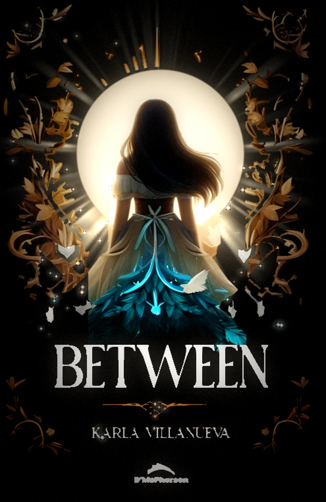

00_fondo_negro | RGB + alfa |
01_halo_resplandor | calor radial |
02_rayos_luz | rotatorio |
03_luna | respira |
04_marco_ornamental | dorado |
05_mariposas | 6 BGP |
06_chica | cuerpo |
07_vestido_turquesa | destello |
08_chispas | 127 puntos |
09_titulo_between | tipografía |
10_autora | tipografía |
11_adorno_rombo | filigrana |
12_logo_editorial | marca |
Todo el pipeline es determinista y reproducible:
build_layers.py extrae las capas,
build_anim.py renderiza los 144 fotogramas,
encode2.py + encode_mp4.py empaquetan.
Bucle de 6 s a 24 fps.